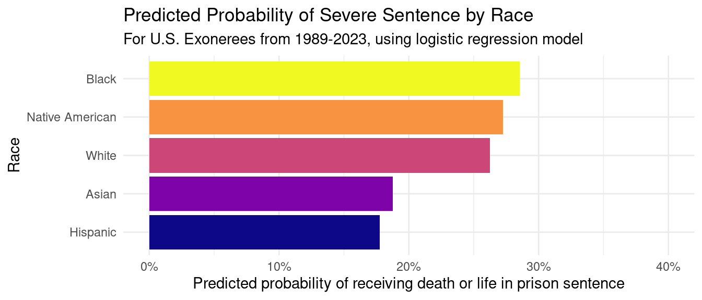
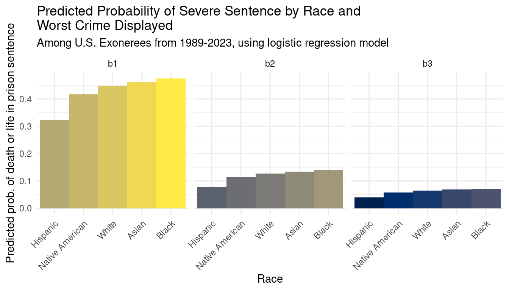
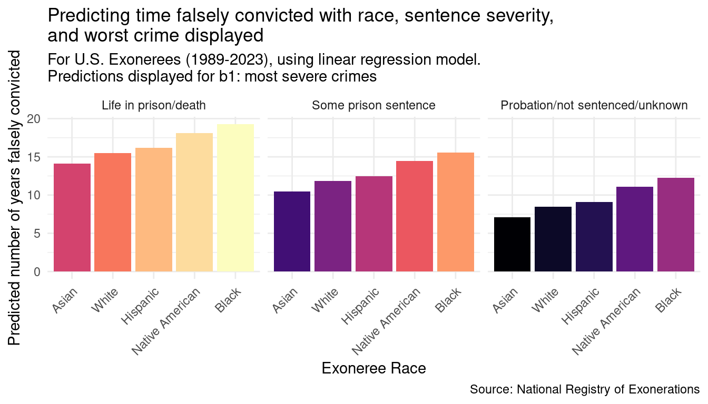

Race and U.S. Exonerations
Analyzing the impact of race in U.S. exoneration cases
Introduction
The criminal justice system in the United States has long been under scrutiny for its disproportionate impact on minority communities. One particular point of interest is exonerees, people who were convicted of a crime and were later found innocent. Biased policing practices has ensured that many Black and POC communities are impacted by false convictions. Further, exonerees often have to wait years or even decades before they are cleared and face punishment for a crime they shouldn’t have been convicted of. Other exonerees are not so lucky and are put to death before they are cleared.
In this project, we analyze and model how race impacts the way exonerees are treated by the criminal justice system. We aim to answer the question: how does race impact the severity of the sentence that exonerees receive and the number of years between their conviction and their exoneration?
To do this, we first generate predictions on whether or not an exoneree received a severe sentence (life in prison or death) and determine if race has a significant effect on the probability of these sentences. We consider other important variables that could affect these probabilities, such as the crime for which the exoneree was falsely convicted for. Next, we shift our focus to compare how long exonerees have to wait before they are exonerated between race categories. In particular, we examine the differences between White exonerees and non-White exonerees.
We find that predicting sentence severity with race alone and race with crime severity held constant generally does not show a significant difference between White and non-White exonerees, with the exception of Hispanic exonerees. We do find a significant difference between the probability of receiving a severe sentence between Hispanic and White exonerees. The magnitude and direction of this difference will be discussed in more detail.
Our analysis of the data also uncovers a significant difference between Black and White exonerees when modelling the number of years spent between conviction and exoneration, providing support to the argument that White and Black exonerees receive differential treatment at the hands of the judicial system. However, we do not find any other significant results among other race categories.
Although our findings do not definitively prove that the judicial system is biased against minority racial groups, it does provide convincing evidence that there are aspects of the system that does not treat exonerees equally and yields several avenues for further research.
Data description
Motivation
The data set used for our analysis is from the National Registry of Exonerations, a project founded in 2012 by the Newkirk Center for Science at University of California Irvine, the University of Michigan Law School, and Michigan State University College of Law. The Registry was created in an effort to reduce and prevent future false convictions through the collection and dissemination of accurate and objective information about exonerations in the United States. The data was requested and collected through their website.
Composition
Each observation in the data set represents an individual who was convicted of a crime in the United States and later was found innocent or had their charges acquitted after a re-examination of their case. There are 3284 observations in the data set as of the date it was collected from the Registry (early April 2023), but we use 3256 observations after filtering for the five most frequently occuring race categories. The Registry has collected data from every known exoneration in the United States between 1989 and 2023. The Registry is a living data collection project that is constantly adding and discovering new information about exonerations. Thus, we can consider this data set as a sample (albeit a very comprehensive one) of all U.S. exonerees.
Individual observations include a myriad of information regarding the exoneree and the circumstances of their case. Among the 23 fields in the original data set, there are personal information fields detailing the name, race, and sex of the exoneree, as well as fields that detail information about the exoneration itself, such as the length of time the exoneree spent in prison, the crime of which they were convicted, their sentence, and the conditions that eventually led to their exoneration.
There are some errors/imperfections in this data set, mainly due to inconsistent data entry combined with an outdated codebook. This combination means that some values and/or fields are largely not intelligible. To the best of our capabilities, we exclude these observations and fields from our analyses.
While this data only consists of publicly available information regarding U.S. exonerees, it does reveal personal and potentially sensitive information about each exoneree, such as their name, sex, and race. Further, it is possible that some of the content in this data set might be anxiety-inducing due to the nature of the crimes that the exonerees were accused of committing.
The data set identifies several subpopulations, including by race. There are 9 race categories in the data set, with 5 of them being used in our analysis: Asian (n = 1078), Black (n = 1724), White (n = 32), Hispanic (n = 400), Native American (n = 22). The other race categories are either not well defined (“Other” or “Don’t Know”) or contain only one observation so are omitted.
Preprocessing/cleaning/labeling
We clean all field names using the janitor package. We create 4 new fields, one that indicates the number of years between conviction and exoneration (diff_conv_ex), and two that represent various stratification of the sentence field for use in our analysis (sentence_severity and sentence_severity_3). The fourth field (wc_bucket) represents ‘buckets’ of the worst crime for which exonerees were falsely convicted. There are 9 buckets, with 5 crimes in each bucket. This is discussed in more detail later in the report. Finally, we filter out fields that we do not make use of in our analyses. For more information on the cleaning and preprocessing of the data, see the Appendix section on data cleaning.
The “raw” data can be found in the us_exonerations.csv file in our GitHub repo.
Data analysis
Predicting sentence severity with race
First, we analyze whether we would expect sentence severity to change with race using a logistic regression model. We use a binary sentence severity variable, with “Severe” indicating a life in prison or death sentence, and “Not Severe” indicating any other sentence. We include observations from the five most commonly occurring races in the data set: Asian, Hispanic, Black, White, and Native American. Since we want to compare how severe sentencing differs between minority and White exonerees, we use White as the baseline variable. This yields the model:
\[ \begin{split} \log\Big(\frac{p}{1-p}\Big) = 1.0329 \\ -~0.1150 \times race~Black +~0.5005 \times race~Hispanic \\ +~0.4334 \times race~Asian -~0.0521 \times race~Native~American \end{split} \]
We can use this model to generate predictions about the probability of receiving a severe sentence.

The predicted probability of a severe sentence for Black and Native American exonerees is higher than White exonerees, whereas the probabilities for Hispanic and Asian exonerees are lower than White exonerees. Before we can interpret these results, we must first determine if any of these results are statistically significant.
Evaluation of significance:
We conduct a hypothesis test to measure whether the regression coefficients determined above are significantly different than 0 (suggesting some relationship between the race and sentence severity) or if the observed differences are due to random chance. We use variables \(R_B, R_H, R_A, R_N\) (for raceBlack, raceHispanic, raceAsian, and raceNativeAmerican respectively) to represent the coefficients of the stratified race variable shown in the model. In our hypothesis, we use the general \(R_i\) to represent all coefficients in the model for brevity.
For our analysis, we use a significance level of \(\alpha = 0.05\).
Null Hypothesis: \[ H_0: R_i = 0\] Our null hypothesis states that the log odds (and therefore also the predicted probability) of not receiving a severe sentence is not different for exonerees of the race designated by \(i\) and White exonerees (the baseline variable).
Alternative Hypothesis: \[ H_A: R_i \ne 0\] Our alternative hypothesis states that the log odds (and therefore also the predicted probability) of not receiving a severe sentence is different for exonerees of the race designated by \(i\) and White exonerees (the baseline variable).
| term | p_value | |
|---|---|---|
| 1 | intercept | 0.886 |
| 2 | raceAsian | 0.346 |
| 3 | raceBlack | 0.166 |
| 4 | raceHispanic | 0.000 |
| 5 | raceNative American | 0.896 |
For all race categories except Hispanic, the p-value leads us to the following conclusion:
Since the p-value is greater than the significance level (\(\alpha = 0.05\)), we fail to reject the null hypothesis in favor of the alternative hypothesis. The data does not provide convincing evidence that Asian, Black, or Native American exonerees have a different log odds of receiving a severe sentence than White exonerees. This implies that the data does not provide convincing evidence that the true probability of receiving a severe sentence is different between Asian, Black, Native American, and White exonerees.
For the Hispanic race category, the p-value leads us to the following conclusion:
Since the p-value is less than the significance level (\(\alpha = 0.05\)), we reject the null hypothesis in favor of the alternative hypothesis. The data provides convincing evidence that Hispanic exonerees have a different log odds of receiving a severe sentence than White exonerees. This implies that there is a difference in true probability of receiving a severe sentence between Hispanic and White exonerees.
The lack of significance among most of the race groups suggests that race alone does not give us much information about whether or not an exoneree receives a severe sentence.
One facet that this model fails to consider is the severity of the crimes that the exonerees were falsely convicted of. What if the proportions of exonerees being falsely convicted of more severe crimes are different across races? This could skew the results of our analysis.
To explore the answer to this question, we look to another field in our data set: worst_crime_display.
Adding worst crime displayed
worst_crime_display indicates the worst crime that the exoneree was convicted of. Crimes are designated as “worse” in accordance to the National Registry of Exoneration codebook. For ease of analysis and brevity, we bucket these crimes by severity, with 5 crimes in each bucket and 9 buckets total. Lower bucket numbers represent more severe crimes. For example, b1 (bucket 1) contains murder, manslaughter, attempted murder, accessory to murder, and sexual assault whereas b9 (bucket 9) contains stalking, harassment, threats, filing a false report and other.
We add this new bucketed field into our original model to show the effects of worst crime displayed and race on sentence severity. We can use this model to generate and visualize predictions for combinations of worst crime and race. We isolate the first three buckets (b1, b2, b3) as the crime severities that are most likely to lead to a severe sentence.

Evaluation of significance
As with the first model we built, we conduct a hypothesis test on the coefficients of our model. For brevity, we omit the full model in this report. We represent the coefficients in our model with variables \(R_i\) and \(WC_j\), where \(R_i\) represents the coefficient for the race represented by \(i\) as before, and \(WC_j\) represents the coefficient for the crime bucket represented by \(j\) (\(j\) is one of b1, b2, …).
Null Hypotheses: \[ H_0: R_i = 0, ~WC_j ~constant~~\forall j \in (b1...b9)\] Our null hypothesis for \(R_i\) states that the log odds (and therefore also the predicted probability) of not receiving a severe sentence is not different for exonerees of the race designated by \(i\) and White exonerees (the baseline variable), holding crime severity bucket constant.
Alternative Hypothesis: \[H_A: R_i \ne 0, ~WC_j ~constant~~\forall j \in (b1...b9)\] Our alternative hypothesis for \(R_i\) states that the log odds (and therefore also the predicted probability) of not receiving a severe sentence is different for exonerees of the race designated by \(i\) and White exonerees (the baseline variable), holding crime severity bucket constant.
| term | p_value | |
|---|---|---|
| 1 | intercept | 0.000 |
| 2 | raceAsian | 0.852 |
| 3 | raceBlack | 0.214 |
| 4 | raceHispanic | 0.000 |
| 5 | raceNative American | 0.794 |
| 6..12 | ||
| 13 | wc_bucketb9 | 0.000 |
Note: we omit the rest of the rows for brevity, but the p-value for all wc_bucket coefficients is p < 0.001.
Using a significance level of \(\alpha = 0.05\), the p-value for \(R_H\) leads us to the following conclusion:
Since the p-value of \(R_H\) is less than the significance level of \(\alpha = 0.05\), we reject the null hypothesis in favor of the alternative hypothesis. The data provide convincing evidence that Hispanic exonerees have a different log odds (and thus predicted probability) of receiving a severe sentence than White exonerees, holding crime severity bucket constant.
Using a significance level of \(\alpha = 0.05\), the p-value for all other \(R_i\) leads us to the following conclusion:
Since the p-value for all \(R_i\) is greater than the significance level of \(\alpha = 0.05\), we fail to reject the null hypothesis in favor of the alternative hypothesis. The data does not provide conclusive evidence that the log odds (and predicted probabilities) of receiving a severe sentence are different between White exonerees and the race category specified by \(i\), holding crime severity bucket constant.
These results suggest that, even accounting for crime severity, the predicted probability of an exoneree receiving a severe sentence does not seem to be different among race categories with White exonerees as a baseline except for Hispanic exonerees.
Because both of our models and hypothesis tests suggests that Hispanic exonerees are associated with a difference in predicted probability when compared to White exonerees, we conduct a confidence interval to generate an estimate of the magnitude and direction of this difference.
Using bootstrapping, we generate the following 95% confidence interval for the difference in proportion of Hispanic exonerees and White exonerees who received a severe sentence:
\[ p_H - p_W \in (-0.126, -0.024) \]
Thus, we are 95% confident that the true proportion of Hispanic exonerees who received a severe sentence is between -0.126 and -0.024 lower than the true proportion of White exonerees who received a severe sentence. What does this imply? The difference between these two groups of exonerees could be indicative of differences in sentencing between White and Hispanic exonerees, or could be a consequence of several limitations in our data and model, which we will discuss later.
Analyzing length of time falsely convicted
Next, we combine the elements of each of the previous analyses to model exoneree outcomes after the sentencing. More specifically, we are curious to see if race has an impact on the number of years between conviction and exoneration.
We aim to model how long an exoneree will spend between conviction and exoneration using race, their sentence severity, and severity of their crime. To do this, we construct a linear regression model with diff_conv_ex (number of years between conviction and exoneration) as the outcome variable and race, sentence_severity_3and `wc_bucket as predictor variables. In this analysis, we provide more granularity to the sentence-severity variable by splitting outcomes into 3 cases: life in prison/death, some other prison sentence, probation/no sentence. This additional stratification will allow us to examine the differences in the time between conviction and exoneration more deeply than with a binary sentence outcome.
| term | estimate | |
|---|---|---|
| 1 | (Intercept) | 15.5181247 |
| 2 | raceBlack | 3.7622943 |
| 3 | raceHispanic | 0.6585421 |
| 4 | raceNative American | 2.6180583 |
| 5 | raceAsian | -1.3738708 |
| 6..14 | ||
| 15 | wc_bucketb9 | -6.0884043 |

Upon visual inspection, we can see several differences in predicted number of years falsely convicted in all three severity levels, particularly when comparing Native American and Black exonerees to White exonerees. We conduct a hypothesis test to see if any of these differences are significant.
Evaluation of significance
As before, we use \(R_i\) to designate the coefficient in our model associated with the race \(i\) (e.g. \(R_B\) designates variable raceBlack) and \(WC_j\) to designate the worst crime displayed bucket. We use \(SV_k\) to indicate the level of sentence severity where \(k\) represents one of the three outcomes (\(SV_L\) represents life in prison or death, \(SV_P\) represents some prison sentence, and \(SV_{NP}\) represents probation or no sentence).
Null Hypotheses: \[ H_0: R_i = 0, ~SV_k ~constant~~\forall k \in (L, P, NP), ~WC_j ~constant~~\forall j \in (b1...b9) \] Our null hypothesis for \(R_i\) states that the number of years falsely convicted is not different between the race denoted by \(i\) and White exonerees (the baseline variable), holding sentence severity bucket and worst crime displayed bucket constant.
Alternative Hypothesis: \[ H_0: R_i \ne 0, ~SV_k ~constant~~\forall k \in (L, P, NP), ~WC_j ~constant~~\forall j \in (b1...b9) \] Our alternative hypothesis for \(R_i\) states that the number of years falsely convicted is not different between the race denoted by \(i\) and White exonerees (the baseline variable), holding sentence severity bucket and worst crime displayed bucket constant.
| term | p_value | |
|---|---|---|
| 1 | intercept | 0.000 |
| 2 | raceAsian | 0.454 |
| 3 | raceBlack | 0.000 |
| 4 | raceHispanic | 0.278 |
| 5 | raceNative American | 0.206 |
| 6..14 | ||
| 15 | wc_bucketb9 | 0.020 |
Note: we omit the remaining rows for brevity, but the p-values for all \(SV_k\) and \(WC_j\) are p < 0.05.
Since the p-value for \(R_B\) is less than the significance level of \(\alpha = 0.05\), we reject the null hypothesis in favor of the alternative hypothesis. The data provide convincing evidence that the true number of years falsely convicted is, on average, different than between Black and White exonerees, holding sentence severity and worst crime severity constant.
To estimate the magnitude of this difference in mean number of years falsely convicted between White and Black exonerees, we create a confidence interval.
Using bootstrapping, we generate the following 95% confidence interval for the difference in mean years falsely convicted between Black exonerees and White exonerees:
\[\mu_B - \mu_W \in~(3.035, 4.435)\] This means that we are 95% confident that at the population level, Black exonerees, on average, are falsely convicted between 3.035 and 4.435 years longer than White exonerees. This suggests that Black exonerees tend to remain convicted for longer than White exonerees, potentially providing evidence that Black exonerees could be looked over for exoneration cases.
Since the rest of the p-values for \(R_i\) is less than the significance level of \(\alpha = 0.05\), we fail to reject the null hypothesis. The data fails to provide convincing evidence that the true number of years falsely convicted is, on average, different for Asian, Native, and Hispanic exonerees when compared to White exonerees, holding sentence severity and worst crime severity constant.
Interpretation and conclusions
Despite only finding one significant result in our analysis of the probability of a severe sentence by race, we are able to glean additional information from our findings. The significant difference between the proportion of Hispanic and White exonerees who receive a severe sentence could be indicative of Hispanic exonerees tending to avoid severe sentences for similar crimes to White exonerees. This would support the argument that White exonerees are not treated better than non-White exonerees. However, it will be important for further research to consider other variables, like the area the exoneree was arrested and convicted in, as they might have an effect on sentence severity outcomes. Furthermore, the lack of significance for the other race categories, even when holding crime severity constant, does not necessarily indicate that race plays no role in deciding sentence severity. There is always the chance that there are confounding variables that were not considered, such as the age of the exoneree when they were falsely convicted.
Our analysis of the number of years between conviction and exoneration by race led to a significant result that provides an interesting interpretation. The significant difference in the mean number of years spent from conviction to exoneration between White and Black exonerees implies a harrowing conclusion: Black exonerees must wait several years longer than their White counterparts to be exonerated, even when holding crime and sentence severity constant. However, it is important to note that there are many variables that could lead to this observed difference. In future research, it will be crucial to include other variables such as location of conviction, age, and sex.
One approach that we tried was to further transform the sentence severity field so that it would become a numerical field estimating the number of years in any sentence, providing more specificity to our analyses. However, irregularities in data entry and ambiguity about how to handle certain sentences made this too difficult to complete. Future analysis may involve further work on extrapolating numerical values from this field.
Limitations
Dataset limitations
Because this dataset is constantly being updated, there are some inconsistencies with the data and the provided codebook. For example, there are tags that exist in our data but not in the codebook. Further, there are some issue with inconsistencies in how data has been entered into the database, particularly in the lack of a standardized format for the sentencing, which made it difficult to transform into a numeric estimate. There is also a question of how accurate the data is, given that they are reporting on exoneration cases from more than 30 years ago.
Another limitation in this data set is the amount of observations. Although there are several thousand in total, when analyzing subgroups (such as race), some categories have very few observations.
One key limitation to this dataset in the context of the real world is that it is contained to people who have already been exonerated. It does not represent all falsely convicted people and thus any interpretations we make cannot be extrapolated to the rest of the prison population. Future analyses could consider combining datasets to analyze both current prisoners and exonerees at the same time.
Analysis limitations
One key limitation to our analyses is our use of bucketing/generalization of several of our variables. sentence_severity is a binary variable that tries to represent hundreds of different sentence outcomes. This loss of specificity prevents us from analyzing many details that could lead to different results. Further, wc_bucket generalizes several crimes into the same severity level based on a single perspective of crime severity given by the codebook. This leaves much room for debate about the accuracy of these buckets and prevents analyses from a crime by crime basis.
Another limitation to our analyses are missing explanatory variables that could change the outcomes of interest. In interest of maintaining simplicity, we did not include several variables in our models that could have presented different conclusions, such as age, county that the exoneree was convicted in, and more.
Acknowledgments
Data source: National Registry of Exonerations
Some important and useful tools that helped with our data set and with the analysis overall were utilizing the tidyverse and tidymodels packages. In using these packages, we made consistent use of the excellent tidyverse package documentation.
While writing the report, we also heavily referenced the materials provided to us in INFO 2950, which can be found here (shout out Professor Soltoff).
To help us create presentable reports and presentations, we made use of the Quarto documentation.
Stack Overflow came into handy when running into some problems in our analyses, including for string splicing and diagonal axis labels.
We would also like to acknowledge each as teammates for always working together when one of us was stuck or needed help.